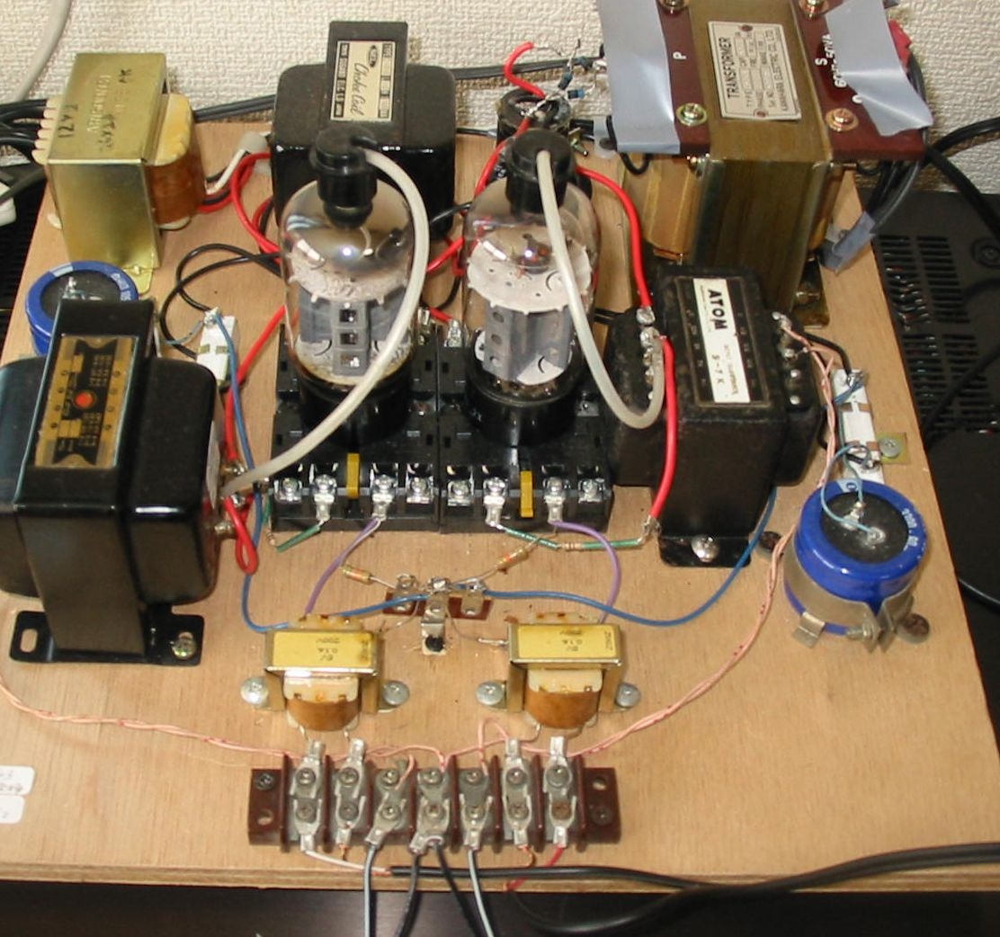
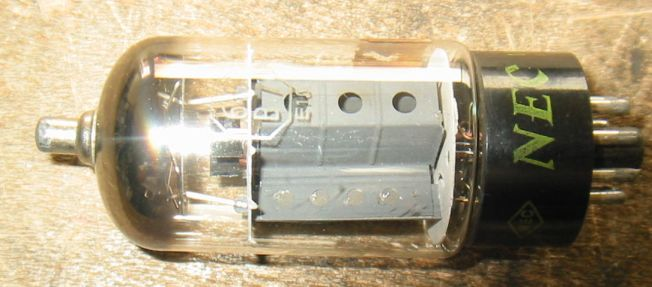
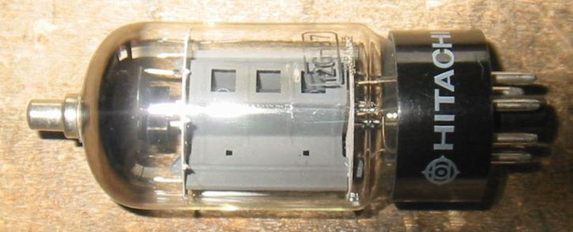

6GB7/12GB7について
6DQ6にそっくりの球だという印象があります。そのときには6DQ6と6GB7の関係はまったく
知りませんでしたが、アメリカと｣ヨーロッパ、そして日本の技術の関係が少しわかってきた今では、
なるほどという感じです。
12GB7シングル３結アンプ
水平出力管12GB7もたくさんあるので、何とか活用できないがと考えていましたが、
サイズと容量が大きくなっただけで、6BQ6シングル３結アンプでそのまま動作します。
この球は６BQ6の構造ををそのまま1.5倍にしたという感じです。ピン接続も同じで差し替えただけで
そのまま動作しますが、それではつまらないのでカソードの抵抗を換えて、プレート損失を許容値の15W
まで持ってゆきます。この球は6DQ6よりGmが14000と高く、μ２も6と高いのですが、計算上rpは
420Ω位になります。

12GB3シングルアンプで12GB7を動作させたところ
2A3シングル用のOPTが載っているので、このアンプのほうが６BQ63結アンプよりいいかもしれません。

2010年４月１記載
いろいろな6GB7/12GB7
NEC 6GB7

HITACHI 12GB7

TV水平出力管(欧州系)のページに戻る